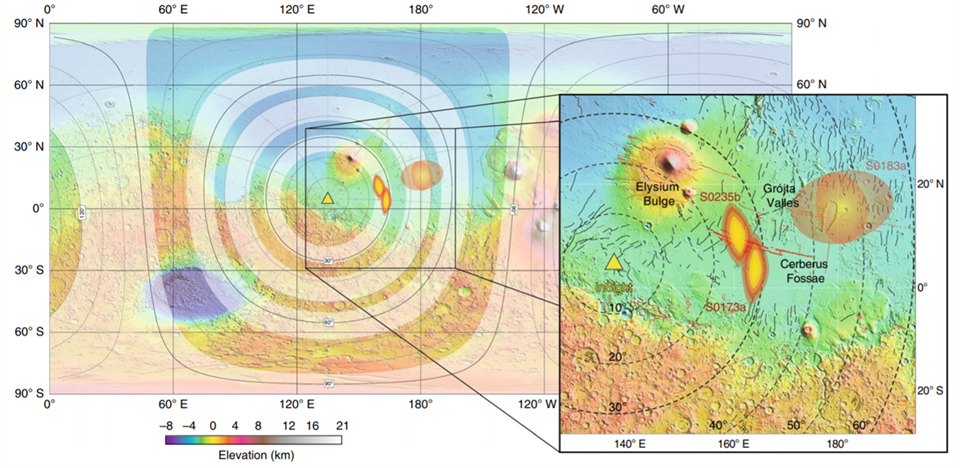

Marte está geológicamente vivo!
El módulo de aterrizaje InSight de la NASA llegó a Marte el 26 de
noviembre de 2018, aterrizando en la región de Elysium Planitia, en
un pequeño cráter informalmente llamado Homestead hollow. InSight
tiene como objetivo examinar la estructura interior y la composición
del planeta rojo, lo que ayuda enormemente a los científicos a
comprender los complejos procesos que han dado forma a nuestro
vecino en el sistema solar. Ahora, tras 10 meses de misión, se
acaban de presentar los resultados de los experimentos llevados en
la superficie del planeta en un conjunto de documentos publicados en
las revistas Nature Geoscience y Nature Communications. En estos se
demuestra que Marte es sísmicamente activo a la vez que se informa
de la naturaleza de su compleja atmósfera interior, campo magnético
y geología.
Mapa de actividad sísmica de Marte

Sismicidad y magnetismo: los latidos de un planeta rocoso
Así, en un documento general publicado en Nature Geoscience, se
destacan algunos de los hallazgos clave del primer año de la misión
en Marte. Estos incluyen la primera detección inequívoca de
terremotos, a los que los científicos se refieren como "marsquakes",
lo que en una traducción al castellano podríamos referirnos como
"martemotos", y entre los que se incluyen más de 20 eventos de
magnitud entre 3 y 4. No obstante, la actividad sísmica de Marte se
explora más detalladamente en otros dos documentos presentados por
la NASA, también resultado del éxito de la misión. De este modo, a
día 30 de septiembre de 2019, InSight ya había detectado 174 eventos
sísmicos en Marte, 24 de los cuales son de magnitud relativamente
grande y de fuentes distantes. Además los investigadores detallan
que la ubicación de dos de los martemotos más grandes registrados
podría ubicarse en Cerberus Fossae, una región que ha mostrado
evidencia de actividad volcánica y tectónica reciente.
También los campos magnéticos proporcionan una ventana a la
estructura y evolución interior de un planeta, incluidos sus
entornos atmosféricos y espaciales. En este sentido los satélites en
Marte han medido campos magnéticos de la corteza y los cuales
parecen apuntar a la existencia de una antigua dinamo. Estos campos
interactúan con el viento solar para generar campos magnéticos
transitorios y corrientes eléctricas en la atmósfera superior del
Planeta Rojo. Pero las mediciones de InSight han hallado, además,
que este campo magnético - al menos en los aledaños del punto de
aterrizaje- es diez veces más fuerte de lo previsto por los modelos
basados en satélites. Por su parte, de los datos recogidos por la
nave, los científicos también infieren la presencia de rocas
magnetizadas a unos 150 kilómetros de profundidad de la superficie
de Elysium Planitia, lo que también parece apuntar a que el interior
metálico de Marte pudo funcionar en su día como una dinamo del mismo
modo en que hoy lo hace la Tierra.
Luces, ruido y movimiento en la atmósfera marciana
La atmósfera de Marte es delgada, aunque rica en aerosoles de polvo,
y cubre una superficie seca. Como tal, Marte brinda la oportunidad
de expandir nuestro conocimiento sobre las dinámicas atmosféricas
más allá de los datos que se pueden obtener de la atmósfera de la
Tierra. El módulo de aterrizaje InSight está midiendo la atmósfera
de Marte con una continuidad, precisión y frecuencia de muestreo sin
precedentes, revelando nuevos fenómenos atmosféricos. InSight es
especialmente sensible al clima regional y a gran escala y obtuvo
una cobertura detallada in situ de una tormenta de polvo regional en
Marte. Las imágenes han permitido medir las velocidades del viento a
gran altitud y revelar una especie de "resplandores en el aire" que
corresponden a débiles emisiones producidas por reacciones
fotoquímicas en la atmósfera media. Las mediciones meteorológicas
también han producido un respetable catálogo de ondas de gravedad
atmosférica. A partir de estas mediciones, los científicos también
han descubierto infrasonidos marcianos de inesperadas similitudes
con los de la Tierra, y sugieren que estas observaciones resultarán
clave en el futuro estudio de la atmósfera marciana